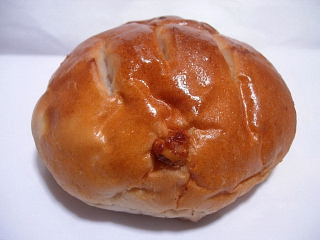
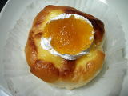

ベルクのくるみチーズパン
2008/8/9
ふんわりしたバターロールっぽいパンの中に、くるみと、小さいサイコロ状のチーズが入ったパンです。

普通に相性のいい組み合わせなので、普通に美味しいお勧めの商品ですね。
ふんわりと軽いので、とっても食べやすかったです。
島根県出雲市今市町
2008/8/9
ふんわりしたバターロールっぽいパンの中に、くるみと、小さいサイコロ状のチーズが入ったパンです。

普通に相性のいい組み合わせなので、普通に美味しいお勧めの商品ですね。
ふんわりと軽いので、とっても食べやすかったです。
2008/6/14
6/14,15はパラオで「いいもの食べ歩き市」ってイベントをしてました。
ベルクドリッテでは、「焼きたてあつあつパンのふるまい」をしてて、「パンをふるまうってどんなんだろう？」って思い見に行きました。
お店の前に試食スペースが用意してあって、そこで数種類（4種類だったかな？）のパンがカットして置いてあり、勝手に試食出来る様になっていました。
まとめて試食があるのって、取り易くてよかったです。
食パンの試食ってあんまり見ないので、牛乳食パンとホテル食パンを試食して帰りました。
私は牛乳食パンの方が味が強くて好きかなって思いました。
2008/1/5
デニッシュパンの上にクリームとフルーツが乗っているタイプのパンは色んな所で見るんですが、ここのは普通のパンの上にクリームとジャムが乗っていました。
ちょっとチープな感じがしますが、その分お値段がお手ごろになっているので買いやすかったです。

見た目通りにしっかり甘くていいです。デニッシュと比べてパンの部分がちょっと寂しい感じもしますが、みかんのジャムとクリームの味がしっかりあるので物足りなさ感はそんなになかったです。
手軽に甘いものを食べるにいいですね。
2007/9/22
カレーパンのカレーが、牛筋カレーバージョンになってます。
牛筋でカレー作ったらきっとこうなるだろうな的な、予想通りの味でした。
牛筋を煮込んだときに出る「ねちょねちょ」した食感や、牛肉の濃い風味がそのまま味わえました。
名前通り商品だったので「あ、ホンとだ。牛筋だ。」って感心しながら食べました。
2006/2/11
パラオ内のパン屋さん「ベルク」で、今日は菓子パンとかほとんどの商品が100円で安売りしてたので買ってみました。
出雲ドームパンって変な名前なので、ちょっと味に期待が出来なさそうな感じがしたんですが、案外良かったです。
ふんわりとしたレーズンパンで、砂糖甘い味なんですけど、菓子パンらしくて美味しかったです。パンと砂糖の組み合わせってとってもシンプルな感じですけど、やわらかいレーズンパンにとっても合ってていい味でした。